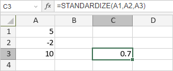

STANDARDIZE funkcija
STANDARDIZE funkcija je jedna od statističkih funkcija. Koristi se za vraćanje normalizovane vrednosti iz distribucije karakterisane zadatim parametrima.
Sintaksa
STANDARDIZE(x, mean, standard_dev)
STANDARDIZE funkcija ima sledeće argumente:
| Argument | Opis |
|---|---|
| x | Vrednost koju želite da normalizujete. |
| mean | Aritmetička sredina distribucije. |
| standard_dev | Standardna devijacija distribucije, veća od 0. |
Napomene
Kako primeniti STANDARDIZE funkciju.
Primeri
Slika ispod prikazuje rezultat koji vraća STANDARDIZE funkcija.
